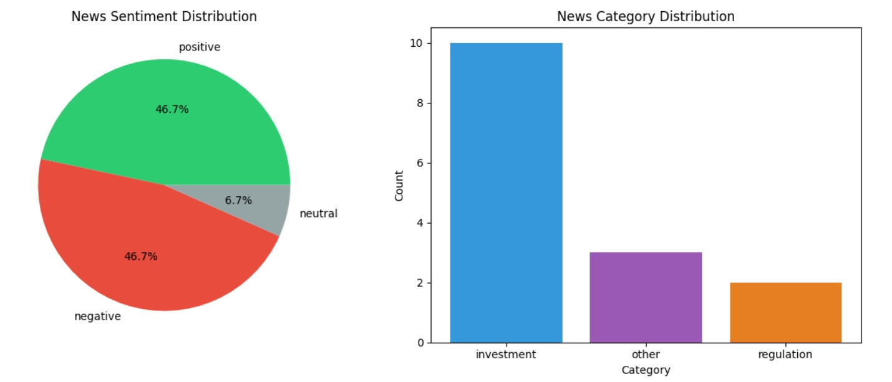

Zhi Qingying
Data Analyst | University of Hong Kong
Projects
HR Analytics Dashboard - Employee Attrition Risk Analysis
Built an interactive Power BI dashboard analyzing employee attrition patterns from 19,000+ records.
Identified key risk factors including education level, experience, and city development index.
Created risk segmentation model to identify high-attrition candidates using Python (Pandas, Scikit-learn)
and visualized insights with DAX measures. Key finding: Entry-level employees in low-development cities
show 32% attrition rate, 2x higher than average.
Power BI
DAX
Python
Pandas
Scikit-learn
Machine Learning
Data Visualization
📊 View Dashboard Details →
📊 Financial News Intelligence System – AI-Powered Analysis Pipeline
Built an automated pipeline that scrapes, cleans, and analyzes fintech news using Generative AI.
The system processes hundreds of articles daily, generating concise summaries, sentiment analysis,
and topic classifications. Final insights are compiled into multi-sheet Excel reports for easy review.
🐍 Python
📊 Pandas
🌐 Requests
🍲 BeautifulSoup
🍃 MongoDB
🤖 DeepSeek API
📁 openpyxl
🏗️ System Architecture

End-to-end pipeline: Data scraping → Cleaning → MongoDB storage → AI analysis → Excel reporting
📈 Analysis Results

Sample output: Sentiment distribution (7 positive, 7 negative, 1 neutral) and category breakdown from 15 fintech news articles.
🤖 AI-Generated Summary Sample
Original: "After pivoting, Y Combinator grad Glimpse raises $35M led by a16z"
AI Summary: "Y Combinator graduate Glimpse has secured $35 million in Series A funding led by Andreessen Horowitz."
✨ Key Features:
- Automated Data Collection: Scrapes fintech news from NewsAPI with anti-detection measures
- Data Cleaning: Handles missing values, deduplication, text normalization using Pandas
- AI-Powered Analysis: Generates summaries, sentiment scores, and category classification via DeepSeek API
- MongoDB Storage: Structured storage with indexing for efficient querying
- Automated Reporting: Multi-sheet Excel reports with source/sentiment/category breakdowns
Hong Kong Cross-Border Medical Aesthetics Mini Program
Identified market opportunities in mainland-to-Hong Kong medical aesthetics consumption, initiated a cross-border mini-program project positioned as a "curated bridge for mainland customers seeking HK medical aesthetics services".
Product Design
Requirements Analysis
PRD
Olist E-Commerce Platform Operations Analysis
Processed 90,000+ orders with Python, multi-table join queries with SQL, and created interactive dashboards with Power BI.
Python
SQL
Power BI
Data Analysis & Website Development Intern | Pong Company Limited
Independently built a Shopify e-commerce website, analyzed user behavior with Google Analytics, and optimized conversion rates.
Shopify
Google Analytics
Conversion Optimization
📧 your.email@email.com |
🔗 GitHub: zhi-qingying